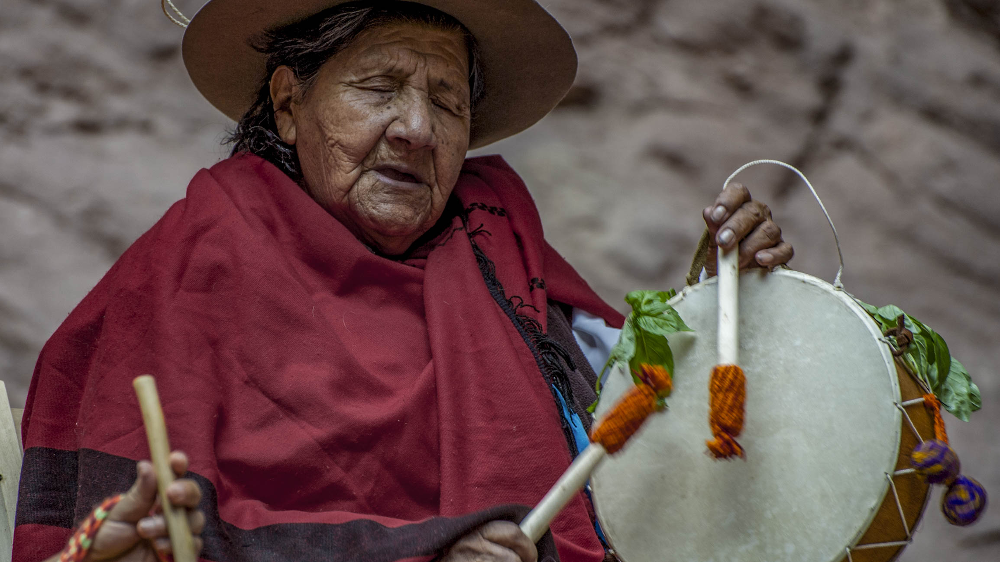
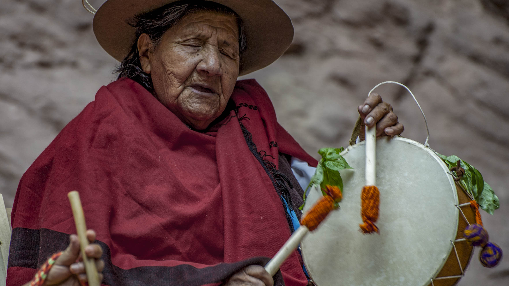

Proyecto GRAPa
Grupo de Relevamiento Acústico del Patrimonio
Proyecto GRAPa está conformado por una serie de trabajos individuales interrelacionados de relevamiento, registro y promoción del Patrimonio Acústico de distintas regiones de nuestro país.
-
Relevamientos acústicos en audio 3D
-
Registros musicales y/o rituales patrimoniales en Realidad Virtual
-
Fomento de la creación musical para obras específicas de sitio
-
Serie audiovisual de micro documentales recogiendo el trabajo realizado
Los sonidos en el espacio
La creación y ejecución musical para occidente, está regida por parámetros establecidos en los que, tanto los ejecutantes como los oyentes mantienen ubicaciones estáticas y preestablecidas, como es el caso de un teatro, donde el público tiene su lugar en las butacas, mientras los artistas permanecen en el escenario al frente.
Para poder comprender las prácticas musicales y rituales que nos anteceden, ajenas a estos modos, es necesario vivenciarlas de la manera en que se recrean que, en la gran mayoría de los casos, proponen experiencias inmersivas de escucha, en las que, por su misma práctica, el espacio juega un rol fundamental ampliando la percepción sonora más allá de los límites visuales.
En la búsqueda de proponer al espectador una experiencia vivencial más completa acústica y visualmente, es que usamos tecnología especifica para registrar estas músicas y rituales.
El registro en audio y video inmersivo permite difundir dichas prácticas de un modo mucho más próximo a una descripción emic , enmarcadas en su lugar de origen y enriqueciendo la comprensión de la cosmovisión que las comunidades expresan en sus prácticas culturales.
El patrimonio Acústico
Nos referimos al Patrimonio Acústico como aquellos lugares que por sus características morfológicas y ambientales involucran la experiencia auditiva como parte inseparable del entorno.
Estos aspectos acústicos varían a lo largo del tiempo como consecuencia del uso, las transformaciones ambientales y la degradación de sus materiales.
Por ello vemos necesario retratar dichos espacios a través de estudios acústicos y morfológicos que permitan preservar sus características.
Registramos estas particularidades sonoras realizando medidas acústicas específicas mediante Respuestas Impulso con micrófonos Ambisonics y fuentes direccionales.
Asimismo, buscando explorar las particularidades que cada espacio
ofrece a partir de estudios antropológicos de uso y entrevistas a
quienes visitan y utilizan constantemente dichos espacios.
Relevamientos Acústicos
En cada espacio fueron realizadas una serie de relevamientos topograficos y acústicos a fin de datar, lo mas fielmente posible las particularidades en cada formación y las posiciones de cada emisor y receptor.
Debido a las características topográficas de estos espacios (gran irregularidad de sus paredes y suelo con diferencias de nivel) es necesario realizar grillas rombales a una altura fija que permita relevar las distintas posiciones de la fuente y el receptor con una referencia clara, abarcando cuatro puntos extremos del recinto, utilizando como herramienta de replanteo un nivel topográfico.
De este modo queda a dispocision un banco de Respuestas Impulso (IR's)
en Ambisonics (Formato B) para ser utilizadas en post producción de audio,
con fines educativo o de cualquier otro indole:
Registro Audivisual Documental
Realizamos una serie documental audiovisual en la que se recoge la experiencia del trabajo de campo (estudios acústicos y registros musicales).
Esta serie muestra cómo, la exploración de cada espacio (estudio morfológico y sonoridad particular en cada caso), es expuesta y potenciada al experimentarla a través del sonido producido por los intrumentos y voces propios de cada practica musical en diálogo con el paisaje.
Practicas Musicales en Realidad Virtual
Para registrar las músicas de distintos espacios, utilizamos tecnologías de filmación y registro sonoro especifico.
El registro en audio y video inmersivo permite difundir el canto acorde a su práctica y enmarcado en su lugar de origen. A partir de mecanismos de reproducción para Realidad Virtual, el espectador tiene una experiencia vivencial más completa al poder situarse en puntos en los que la expresion artistica cobra mayor relevancia, tal es el caso, por ejemplo de una ronda de copleras registras desde el centro mismo de la ronda.
En la Provincia de Salta (Argentina), la reconocida coplera Mariana Carrizo encuentra una profunda relación entre el canto con caja y estos valles, en cuyos paisajes aprendió a cantar en la niñez. Su participación en Proyecto GRAPa fue indispensable para el reconocimiento y aprendizaje del Canto de la Copla en relación al paisaje.
Los Lugares y La Música
Los espacios donde realizar estos registros, más allá de tenerlos en cuenta por sus características acústicas y el paisaje sonoro que los integran (en la mayoría de los casos únicas), son determinados por varios factores:
-
Significante de uso que tiene y tuvo para la sociedad
-
Atractivo turístico y cultural
-
Accesibilidad
A partir de una exhaustiva investigación, se decidió explorar siete espacios, agrupados en tres regiones de la República Argentina, relacionando cada región con el canto, la música y las expresiones culturales que la integran:
-
Región Noroeste
-
Región Cuyo | Patagónica
-
Región Noreste
Región Noroeste
 

El Canto de la Copla
Región característica por Valles y Quebradas colindantes a la cordillera de los Andes, cuenta con Áreas Protegidas que formaron parte del antiguo camino del Inka en Argentina. En esta región serán estudiados tres espacios: “El Anfiteatro” en la Quebrada de las Conchas (Salta), Parques provinciales de Ischigualasto y Talampaya (San Juan) y “La quebrada de Humahuaca” en La Puna (Jujuy).
El canto de la Copla es una de las expresiones identitarias de la región, practicada por distintas comunidades desde tiempos ancestrales y transmitida por vía oral.
Su forma de ejecución está muy ligada al entorno natural, por lo cual consideramos que es un claro exponente del Patrimonio Acústico y Sonoro. Como práctica cultural, se expresa de modo ritual en rondas improvisadas donde las cajas y voces se alternan continuamente.
El Anfiteatro
A menos de 40 kilómetros de la ciudad de Cafayate sobre la ruta Nacional Nº68, a metros del Río de las Conchas, se encuentra El Anfiteatro .
Se trata de una formación rocosa semi-cerrada de forma pseudo-ojival esculpida por la erosión. Su forma particular y el material de sus paredes hacen que posea una cualidad acústica excepcional, reconocida en la región y que ha dado inicio, por ejemplo, al ciclo del “Concierto en la Montaña”, realizado anualmente en este espacio desde 1991.
Región Cuyo | Patagónica
La Música Araucana
Regiones áridas y de estepas, tanto Cuyo como la Patagonia, se reconocen por sus climas fríos y secos. De estas zonas se decidió trabajar con formaciones cavernarias cuyos atributos acústicos se distinguen de otros espacios en Argentina. En particular serán estudiadas dos formaciones cavernarias significativas de cada región: Caverna de las Brujas en el Departamento de Malargüe (Mendoza) y Cueva de las Manos en el Cañadón del Río Pinturas (Santa Cruz).
Estas regiones fueron habitadas por las comunidades Huarpe y Mapuche, quienes manifestaban una variedad de cantos y músicas recreativas y ligadas a sus creencias. Predominan en ambos casos el canto chamánico y el tambor como elemento identitario. Del mismo modo, las tribus pre-tehuelches (Aoni-Kenk) mucho más relacionados al Cañadón del Río Pinturas, además del canto, poseen un grupo de instrumentos como el koolo, el Rambo y percusivos como el Aple, El Chelper y el sonajero.
Caverna de las Brujas
Es una formación cavernaria cerrada, ubicada a 8 km al norte de R.N. N° 40, en las cercanías de la localidad de Bardas Blancas en el Valle del río Grande, al Sur de la provincia de Mendoza, en el departamento de Malargüe.
Nuestro estudio está centrado en la sala más amplia y accesible, reconocida por sus características acústicas y el paso de comunidades preexistentes llamada Sala de la Virgen .
Su acceso cerrado, de aproximadamente 15 metros de largo, da a una sala de 35 metros de profundidad y 20 metros de ancho aproximadamente con una altura irregular que llega a los 10 metros en algunos puntos.
Región Noreste

La Música Qom
De esta región se propone estudiar dos Parques Nacionales conocidos como: El Impenetrable (Chaco) e Iguazú (Misiones), ambos se caracterizan por su fauna y flora, donde pueden encontrarse cientos de especies hoy consideradas en vías de extinción. De este modo, sus Áreas Protegidas gozan de un paisaje sonoro único en Argentina.
Culturalmente, estos espacios fueron habitados por comunidades entre las que se destacan los Guaycurúes, conocidos como Qom. Sus prácticas musicales se expresan en convivencia con el paisaje sonoro que le da origen. Se destacan por cantos colectivos y solistas acompañados por instrumentos como el n’viqué (especie de violín de una sola cuerda) e instrumentos percusivos como vainas de algarrobos, pezuñas, maracas y sonajeros de calabazas como el cartexetẽ .
Sobre Proyecto G.R.A.Pa
Proyecto G.R.A.Pa. se formó en el año 2017 en base a una cooperación entre la Universidad Nacional de Quilmes (UNQ) y la Universidad Católica de Salta (UCaSal) con el objetivo de realizar un relevamiento de la acústica del Anfiteatro Natural de la Quebrada de las Conchas. En el 2018 ampliamos los objetivos del proyecto al relacionarlo con el canto de la Copla a partir del entorno sonoro propio de sus orígenes. Contamos , desde entonces, con la participación de la coplera salteña Mariana Carrizo, artista comprometida en la lucha por la preservación y revalorización de este canto ancestral.
A partir de allí, iniciamos un proyecto de investigación y producción de contenidos inmersivos, en los cuales la relación entre las músicas nativas y sus entornos acústicos naturales se exprese con claridad. Nuestra finalidad es documentar el Patrimonio Acústico, que entendemos abarca tanto la música en sí misma como el entorno acústico y sonoro en el que es creada.
Integrantes
Francisco Durante
Francisco Durante es Licenciado en Música y Tecnología (UNQ) y Maestro Mayor de Obras dedicado a la investigación, diseño y construcción con materiales naturales y permacultura. Trabaja como compositor en diferentes proyectos artísticos multidisciplinarios en donde se vinculan las músicas tradicionales con nuevas tecnologías y el espacio.
Damian Payo
Damian Payo es Licenciado en Música y Tecnología (UNQ), actualmente se desempeña como docente e investigador en la Universidad Católica de Salta en la ciudad de Salta Capital desde donde ha profundizado en el estudio de Acústica de Salas no convencionales y organizado Jornadas y Seminarios abocados al área de la Acústica y el Audio Digital.
Manuel Eguía
Manuel Eguía es Doctor en Física (UBA) e investigador de CONICET y UNQ, donde dirige el Laboratorio de Acústica y Percepción Sonora (LAPSo), grupo donde ha realizado numerosos trabajos de investigación sobre percepción espacial auditiva y dispositivos que modifican el campo sonoro con medios puramente acústicos.

Mauro Zannoli
Mauro Zannoli es Licenciado en Composición con Medios Electroacústicos (UNQ), compositor, programador y diseñador sonoro. En su trabajo tiene un fuerte interés en la utilización del espacio como un parámetro más del sonido tanto en música como en el arte sonoro. Ha montado sistemas Ambisonics en varios teatros para obras específicas.
Lisandro Fernandez
Lisandro Fernandez es Licenciado en Música y Tecnología (UNQ), musico abocado al estudio de sistemas. Participa activamente del Laboratorio de Software Libre. Dedicado a investigar, producir y divulgar herramientas informáticas, tarea que lo llevó a exponer en distintas jornadas y congresos relacionados a la programación y el arte interactivo en distintos espacios de Iberoamérica.
Juan Barthe
Juan Barthe Es reportero gráfico y realizador audiovisual. Realizó más de 50 cortos de los cuales algunos ocuparon los primeros lugares en competencias y concursos nacionales y provinciales. Trabajó para marcas de aventura como SOX, Columbia, Red Bull, Sckechers, entre otras.
Su interés por las relaciones humanas en sociedad, lo llevó a participar de distintos proyectos audiovisuales documentales por los cuales recorre nuevos caminos acompañado de la implementación de nuevas técnicas para contar historias.
Apoyos y Colaboraciones
Colaboraciones
En cada lugar recibimos la colaboración de:
-
Salta:
-
Mendoza:
A todos y cada uno de ellos va un profundo agradecimiento desde todos los que integramos Proyecto GRAPa.
Productora asociada
Contacto
Mail: info@proyectograpa.com
Teléfono: +54 9 387 4491 448 || +54 9 11 3177 2675